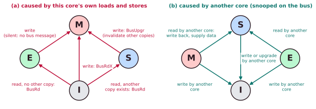
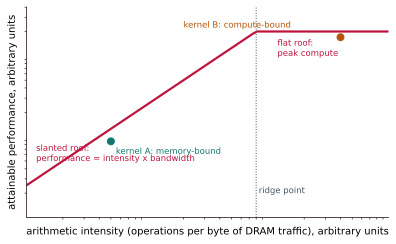

Chapter 5: Coherence, Consistency and Scaling¶
Give every core its own cache and the copies of the same data can disagree. This chapter explains how hardware keeps them in agreement (cache coherence, and the MESI protocol in particular), and then takes up a separate and subtler question: in what order may one core observe another core's writes to different locations (memory consistency)? It closes with what happens when the core count grows so large that one shared memory becomes the bottleneck: NUMA, and the roofline picture of the memory wall.
You need the caches of Chapter 4, and the store buffer and speculation of Chapters 3 and 4 help for the section on consistency.
5.1 The problem: stale copies¶
Both cores have cached \(X = 5\). Core 0 writes 9 into its own cache. Core 1 still reads 5. Without a rule, the two cores silently disagree.
Cache coherence is the hardware guarantee that fixes this. Informally, in a coherent system, for a single memory location:
- A read by a core returns the value of the last write by that core, if no other core wrote in between (program order is respected for one core).
- A write by one core is eventually made visible to all the others.
- Writes to the same location are serialised: all cores observe them in the same order.
Coherence is about a single location. Ordering across different locations is consistency, the subject of Section 5.5.
5.2 Two ways to keep watch¶
Snooping. Every cache watches a shared bus or ring. A write is announced to all; each cache checks its tags and reacts, either by invalidating its copy or by updating it. It is simple and low-latency at small scale, but broadcast bandwidth does not scale beyond about a dozen cores. It is like shouting across an open-plan office.
Directory. A directory, often located at the last-level cache or at a block's "home node", records for each block which cores hold copies and in what state. Writes send messages point to point, only to the sharers. It scales to many cores and to several chips, at the cost of the directory's storage and an extra indirection delay. It is like a receptionist who knows exactly whom to phone.
Most protocols are invalidation protocols: to write, a core first makes every other copy invalid. The rule behind them is many readers, or one writer, never both.
5.3 The MESI protocol¶
MESI is the canonical invalidation protocol. Each cached block is in one of four states.
| State | Valid? | Matches memory? | May others hold it? | Meaning |
|---|---|---|---|---|
| Modified | yes | No: this cache owns the only up-to-date copy | No | The only valid copy; memory is stale. It must be written back before another core reads it |
| Exclusive | yes | Yes (clean) | No | The sole cached copy, unmodified. It can be written silently, moving to M with no bus traffic |
| Shared | yes | Yes | Yes, possibly | A read-only copy; a write needs the other sharers invalidated first |
| Invalid | no | not applicable | not applicable | The block is absent or stale: a read or write here misses |
The E state is MESI's improvement over the older MSI protocol. A load that finds no other sharer lands in E, so a later store upgrades to M for free, with no invalidation broadcast. That is the common case for private data.
The principal bus transactions are:
- BusRd: a read request.
- BusRdX (read for ownership, RFO): a read with intent to write, which invalidates all other copies.
- BusUpgr: an invalidation of the other sharers, sent when the core already holds the block in S and wishes to write.

Example 5.1: three cores and one block
Three cores C0, C1 and C2, and one block X, all start Invalid. The operations, in order, are: C0 reads, C1 reads, C0 writes, C2 reads, C2 writes, C1 reads.
| Operation | C0 | C1 | C2 | Bus message and what happens | Memory up to date? |
|---|---|---|---|---|---|
| start | I | I | I | yes | |
| C0 reads | E | I | I | BusRd; no other copy, so C0 gets E | yes |
| C1 reads | S | S | I | BusRd; C0 snoops, supplies the data and moves E to S | yes |
| C0 writes | M | I | I | BusUpgr; C1 moves S to I | no |
| C2 reads | S | I | S | BusRd; C0 (in M) writes back and supplies the data, M to S | yes |
| C2 writes | I | I | M | BusUpgr; C0 moves S to I | no |
| C1 reads | I | S | S | BusRd; C2 (in M) writes back, M to S | yes |
Memory is stale only after the two writes, until the next read forces the write-back. Had C0 been the only reader before its write, it would have held X in state E, and the write would have been silent: E moves to M with no bus message at all.
Variants¶
MOESI adds an Owned state: a dirty block can be shared while one cache stays responsible for the eventual write-back, so dirty data can be passed from cache to cache without first updating memory (used by AMD). MESIF adds a Forward state: one sharer is designated the single responder to a read request, avoiding redundant replies from several caches (used in Intel's QPI and UPI).
5.4 A trap: false sharing¶
Coherence works on whole blocks (64 bytes), not on single variables. Suppose core 0 keeps updating variable A and core 1 keeps updating variable B, and A and B happen to sit in the same block. Every write by one core invalidates the other core's copy, and the block ping-pongs between them. No data is really shared, yet the cores slow each other down, sometimes by a factor of 10 or more. This is false sharing, and it is the fourth C of Chapter 4 in action. The remedy is to place variables that different cores write in separate blocks, by padding or alignment.
5.5 Memory consistency models¶
Coherence handles one location. Consistency defines the allowed orderings of accesses to different locations, as seen by other cores. It is the contract between hardware and the concurrent programmer.
| Model | The rule | Used by |
|---|---|---|
| Sequential consistency (SC) | The result is as if all cores' operations ran in some single interleaving, each core's operations appearing in its own program order. Intuitive, but forbids many hardware optimisations | No mainstream high-performance processor |
| TSO (total store order) | A load may overtake an earlier store to a different address (stores wait in a FIFO store buffer); nothing else reorders | x86, SPARC |
| Weak or relaxed | Almost any independent pair of accesses may be reordered | Arm, RISC-V (RVWMO), Power |
The classic demonstration is the store-buffer litmus test, sometimes called Dekker's test. Two flags A and B both start at 0:
| Core 0 | Core 1 |
|---|---|
A = 1 |
B = 1 |
r0 = B |
r1 = A |
Under sequential consistency at least one of r0 and r1 must be 1: whichever store reaches memory first is seen by the other core's load. But with store buffers (TSO), both stores can still be waiting in their buffers when the loads execute, so \(r0 = r1 = 0\) is possible.
| Outcome \((r0, r1)\) | Allowed under SC? | Allowed under TSO? |
|---|---|---|
| (0, 1) | yes | yes |
| (1, 0) | yes | yes |
| (1, 1) | yes | yes |
| (0, 0) | no | yes |
A fence (memory barrier) forces earlier memory operations to complete before later ones start. Putting a full fence between the store and the load on each core forbids \((0,0)\) under every model.
x86 MFENCE (and LOCK-prefixed read-modify-write instructions are full barriers)
Arm DMB (also DSB, ISB; plus acquire/release loads and stores LDAR and STLR)
RISC-V FENCE rw,rw (plus .aq and .rl bits on atomic operations; FENCE.I for the instruction cache)
Programming languages wrap fences in "atomics" with named memory orders (in C11 and C++11: relaxed, acquire, release and sequentially consistent), which the compiler lowers to the right fences on each target. Programmers rarely write fences by hand, but locks and flags rely on them.
Coherence is not consistency
Coherence makes the caches agree about each individual location. Consistency governs the order seen across locations. A machine can be perfectly coherent and still let one core observe another's writes to X and Y out of order. Fences fix ordering; they do not "make the caches coherent", because they already are. You need both, and different mechanisms provide them.
5.6 Scaling up: NUMA and the roofline¶
As the core count grows, a single shared memory becomes the bottleneck, so big servers become NUMA (non-uniform memory access): each socket or chiplet owns part of the DRAM. Its own part is fast; another node's part is reached across an interconnect (Intel UPI, AMD Infinity Fabric) and is slower. Software must be NUMA-aware. A first-touch allocation policy places a page in the node of the thread that first writes it, and thread pinning keeps a thread near its data. Coherence at this scale is directory-based.
The roofline model draws the memory wall as a picture. Plot the attainable performance (operations per second) against the arithmetic intensity (operations per byte of DRAM traffic). Two ceilings form a roof: a slanted line on the left, where performance is intensity times memory bandwidth, and a flat line on the right at the peak compute rate. A kernel under the slanted part is memory-bound; to improve it, raise its intensity by reusing data (blocking), or raise the effective bandwidth with prefetching. A kernel under the flat part is compute-bound. The ridge point, where the two lines meet, is the intensity a kernel needs to stop being starved by the memory system.

5.7 Summary¶
- Coherence keeps the copies of one location in agreement: many readers or one writer. Snooping broadcasts; a directory records the sharers and scales.
- MESI has four states (Modified, Exclusive, Shared, Invalid). The E state makes the write to private data silent. MOESI and MESIF add owned and forward states.
- False sharing makes cores slow each other down when unrelated variables share a 64-byte block.
- Consistency models (SC, TSO, weak) define the order of accesses to different locations. Fences restore order where it matters; atomics hide them in high-level code.
- Coherence and consistency are different guarantees. NUMA and the roofline scale the ideas of caching and locality up to whole systems.
5.8 Exercises¶
Exercise 5.1. Core 2 holds X in state M. Core 0 reads X. What happens?
Answer
Core 0's read misses and goes on the bus (BusRd). Core 2 snoops it, supplies the data and writes it back to memory. Both copies end up Shared (S).
Exercise 5.2. Trace the sequence C0 reads, C1 reads, C1 writes, C0 reads of one block X, with all caches initially Invalid. Give the state of each cache after each step.
Answer
C0 reads: C0 = E, C1 = I (BusRd, no other copy). C1 reads: C0 = S, C1 = S (BusRd; C0 supplies and moves E to S). C1 writes: C1 = M, C0 = I (BusUpgr invalidates C0's copy; memory is now stale). C0 reads: C1 writes back and supplies the data; C1 = S and C0 = S (memory is up to date again).
Exercise 5.3. Why is the Exclusive state valuable?
Answer
A core that reads a block nobody else holds gets it in E. If it later writes, E moves to M silently, with no bus transaction and no invalidation. In MSI such a block would arrive in S and the write would need an invalidation broadcast, so for private data (the common case) E saves a bus message per write.
Exercise 5.4. Two threads on two cores increment two different counters. The program runs ten times slower than the same two threads run one after the other. Name the likely cause and one fix.
Answer
False sharing: the two counters lie in the same 64-byte block, so every increment invalidates the other core's copy and the block ping-pongs. The fix is to put the counters in separate blocks, by padding each to at least 64 bytes or by aligning them to 64-byte boundaries.
Exercise 5.5. In the litmus test of Section 5.5, list every possible final value of \((r0, r1)\) under sequential consistency, and the extra one that TSO permits. What must be added to forbid it?
Answer
Under SC: (0,1), (1,0) and (1,1). TSO also permits (0,0), because both stores may still sit in store buffers when the loads execute. A full fence (MFENCE on x86, FENCE rw,rw on RISC-V) between the store and the load on each core forbids it.
Exercise 5.6. "Fences make the caches coherent." Is this true? Explain.
Answer
No. The caches are already kept coherent by the coherence protocol, whether or not any fence executes. A fence orders one core's accesses to different locations as seen by other cores; that is a consistency property.
Exercise 5.7. A kernel performs 2 operations for each byte it fetches from DRAM. The machine's ridge point is at 8 operations per byte. Is the kernel memory-bound or compute-bound? Name one change that would help.
Answer
Its intensity (2) is to the left of the ridge point (8), so it is memory-bound: it sits under the slanted roof. Raising the intensity by reusing data already fetched (blocking or tiling the computation), or raising the effective bandwidth with prefetching, would help; a faster arithmetic unit would not.
Exercise 5.8. What is a "first-touch" policy, and why does it help on a NUMA machine?
Answer
A page is placed in the memory of the node whose thread first writes it. If each thread initialises the data it will later use, that data lives in its own node's DRAM, where access is fast, instead of across the slower inter-node link.